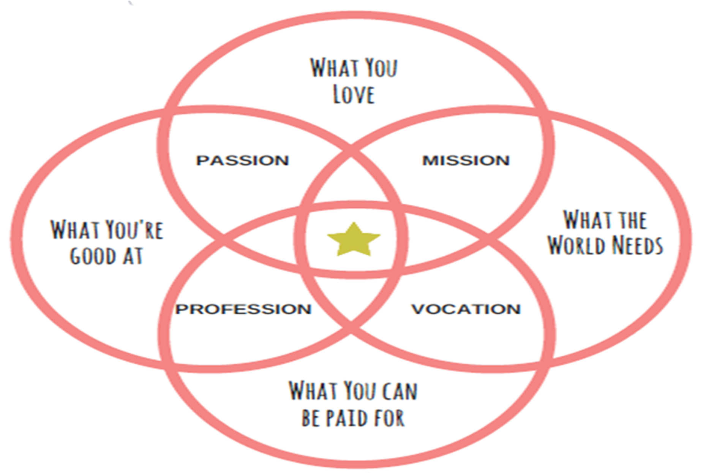

Septmber 23, 2020
You like your job, but it doesn’t excite you anymore. You’re entering the job market but aren’t sure what you really want to do. You feel stuck, or like something is somehow
missing from your life. You long to find your life purpose, but you don’t know where to start.
Sound familiar?
We’re all souls having a human experience, trying to figure out why we’re on this Earth.
I’ve been there.
And from my countless existential crises, self-help books and glasses of wine, I found my purpose.
I’ve also helped hundreds of women find their life purpose and take on fulfilling, meaningful roles that create impact in the world.
Without a life purpose, you’ll continue feeling stuck, like you’re moving in circles, watching as time continues to pass you by.
A life purpose is like a compass, guiding you over life’s path. Keeping you centered,
focused and clear on what really matters to you and what you want from life.
Here’s the truth: you already know what your life purpose is.
The answer is waiting inside you. You just have to know how to pull it out.
Ikigai is a Japanese term which, loosely translated, means “a reason to live,” or our life’s purpose. The diagram below shows the intersection between four main areas of our lives:

Ikigai is the common ground between what we love, what we’re good at, what the world needs, and what we can get paid for. It’s a great first step to discover your purpose.
Finding and realizing your ikigai will not happen overnight. By working toward our ikigai over time, we will continue to grow and develop in our chosen fields or professions.
And because our ikigai is our choice, we can feel a sense of autonomy over the journey it takes to get there.
Ikigai is often not something grand or extraordinary, which makes it approachable and realistic for many people. In that way, it also improves our wellbeing because we are always working toward something meaningful.
To create your ikigai, start with each of the four main areas of the circle. Write down the activities and topics you love and the things you are good at. Next, think about what the world needs, specifically from you.
Finally, what can you be paid for in relation to your talents and experience.
Next, start making connections between each of the circles. For example, what do you love that the world also needs? What are you good at that you can be paid for?
Answering these questions will help you identify ways of achieving balance within the circles.
When you feel that you have an adequate sense of yourself, brainstorm a few things that could be your ikigai, or how all four areas could intersect and what that might look like in your life.
Then ask yourself what you need to start and stop doing to get there.
While the ikigai exercise is a great way to start brainstorming and visualizing our life purpose, it can be overwhelming to try to achieve it.
We tell ourselves a lot of stories about what we can and can’t do. Fear holds us back from achieving our goals and dreams.
Fear is the number one killer of confidence. When we fear the outcome or a part of the process, we don’t move forward. Taking action leads
to increased confidence. Fear creates this vicious cycle that keeps us from realizing our goals and dreams and, in the process, robs us of our confidence.
Start by making a list of your fears in relation to finding your purpose. What about this discovery process is frightening to you? What are
the unknowns that make you overwhelmed? Think about how this contributes to your level of self-confidence.
Next, identify the evidence that proves your fears wrong. What lie is your fear trying to tell you?
Check out this example:
Once you’ve erased your fears about pursuing your purpose, you can begin to identify your core values. Start by making a list of everything
you value, or use this list of common core values for inspiration. Then, narrow that list down to five of your most deeply held values.
Looking at your list, think about how your current life and work support and reflect these values. How do they show up for you on a daily basis?
What examples do you have of times when you have truly lived your values?
Next, think about which values you may be ignoring or not giving enough attention to in your current situation. How can you bring more
attention to these values? What do you need to start or stop doing to fully embrace and live these values?
Our values represent who we are at our core. When we deeply understand and claim our values, decisions become
easier to make, and we can start putting our dreams into action.
How Core Values Help You Find Your Purpose
Which brings me to the final step. We can’t begin to live our purpose without taking action.
The difference between where we are and where we want to go is what we do.
Some of us are already on our way to living out our ikigai. Others have a little more work to do.
Start by identifying where you fall on that continuum. Then, think about where you would like to be next year.
Next, break down that goal into 12 concrete actions or changes you need to make. Grab your favorite planner, notebook or online calendar
and assign one action for each month for the next year.
By focusing on just one area of improvement per month, our goal becomes more manageable,
and we are more likely to follow through with these small actions.
How to Set an Intention to Find Your Passions and Purpose
©2020 copyright all right reserved(Empire Xclusive)